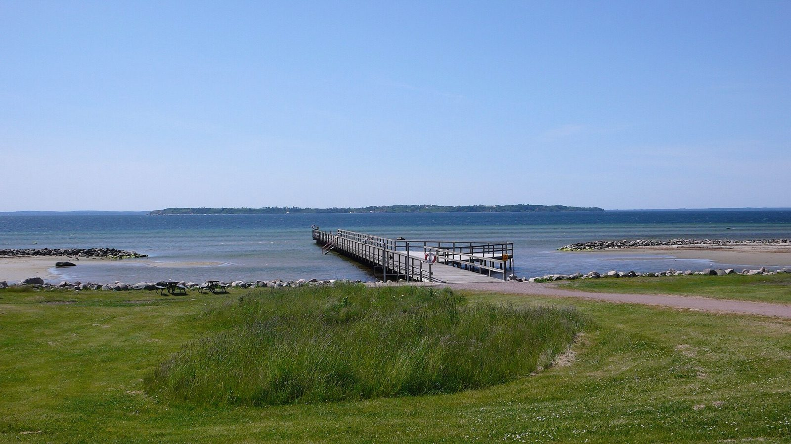

Overnatning nær Ven
Bo på gården, cykl på Ven
Gammeleksgården ligger omkring et kvarter fra Ven-båden i Landskrona. Sov godt på landet, tag morgenbåden ud og kom tilbage til et roligt værelse med eget badeværelse.
Øen midt i Øresund
Derfor skal du til Ven
Ven er en lille ø mellem Sverige og Danmark med bølgende marker, stejle skrænter ned mod vandet og udsigt over hele sundet.
- Cykl rundt på øen på en formiddag, med stop ved fiskerlejerne
- Tycho Brahe-museet og resterne af Uraniborg, hvor astronomen havde sit observatorium
- Whisky- og spiritusdestilleriet ved Backafallen
- Kyrkbacken, med havn, værtshus og Sankt Ibbs kirke oppe på skrænten
- Bad og picnic på strandene og udsigt mod København og Kronborg

Sådan gør du
En dag på Ven fra Gammeleksgården
Kør til Landskrona
Omkring 10 km og et kvarter fra gården til Skeppsbron. Parker ved terminalen.
Tag båden
Knap en halv time over til Bäckviken. Køb billet online hos Ventrafiken på forhånd, især om sommeren.
Lej cykel
Cykler kan lejes ved havnen. Øen er lille nok til at cykle rundt på en dag.
Hjem til gården
Tag en omgang mini golf i aftensolen og sov godt. Udtjekning først kl. 11.

Overnatningen
Hotel nær Ven, et kvarter fra båden
Overnatningen på Ven er lille og bliver udsolgt tidligt om sommeren. Hos os bor du til en betydeligt lavere pris, med rene værelser, eget badeværelse, gratis parkering, mini golf og plads til autocamperen. Du slipper for at nå den sidste båd tilbage og har kort til både Helsingborg, Landskrona og færgen til Helsingør.
Vi ligger på fastlandet i Härslöv, ikke på selve øen.
Spørgsmål og svar
Ofte stillede spørgsmål om Ven
Er der hotel på Ven?
Ja, men kun nogle få små overnatningssteder, og de bliver hurtigt fyldt op om sommeren. Derfor bor mange på fastlandet og tager båden over for dagen.
Hvor langt er der fra Gammeleksgården til Ven-båden?
Båden sejler fra Skeppsbron i Landskrona, omkring 10 km fra gården og et kvarter i bil. Der er parkering lige ved terminalen.
Hvor lang tid tager båden til Ven?
Overfarten fra Landskrona til Bäckviken på Ven tager knap en halv time. Båden sejler hele året, flere gange om dagen. Køb billet online hos Ventrafiken, ellers kan der være lang ventetid om sommeren.
Kan jeg tage bilen med til Ven?
Det kan lade sig gøre, men vi anbefaler, at du lader bilen stå i Landskrona. Øen er lille og opleves bedst på cykel. Tag din egen cykel med på båden mod et gebyr, eller lej en ved havnen i Bäckviken.
Hvorfor bo på fastlandet i stedet for på øen?
Du får rolige værelser med eget badeværelse, gratis parkering og kort til E6. Du kan tage til Ven en dag og til Helsingborg, Landskrona eller Kronborg den næste, uden at skulle nå den sidste båd tilbage.
Flere tips i nærheden finder du under Oplev området.